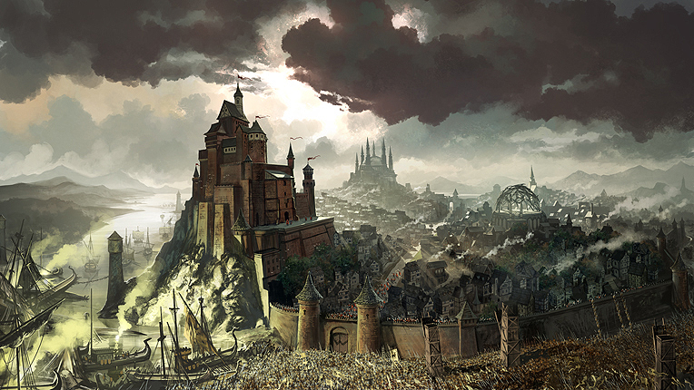

A Luta pelo Trono de Ferro ⚔️
Game of Thrones é uma série de televisão que adapta a saga literária "As Crônicas de Gelo e Fogo". A trama se passa nos continentes de Westeros e Essos, onde várias famílias nobres lutam pelo controle político dos Sete Reinos. Enquanto isso, uma ameaça ancestral desperta no extremo norte, protegida apenas por uma gigantesca muralha de gelo.
A série é conhecida por sua complexidade política, personagens moralmente cinzentos e a constante sensação de que ninguém está seguro, independentemente de quão importante seja para a história.

As Principais Casas de Westeros
Cada casa possui seu próprio lema, brasão e região de domínio. Abaixo estão as mais influentes:
- Casa Stark: Protetores do Norte. Seu lema é "O Inverno está Chegando".
- Casa Lannister: Senhores das Terras Ocidentais. Conhecidos pela frase "Um Lannister sempre paga suas dívidas".
- Casa Targaryen: Antigos governantes de Westeros, famosos por seus dragões. Lema: "Fogo e Sangue".
- Casa Baratheon: A casa que detinha o trono no início da série. Lema: "Nossa é a Fúria".
Passos para Entender o Conflito
Para acompanhar a complexa política da série, recomendamos seguir estes passos de observação:
- Identifique quem é a Mão do Rei atual.
- Observe as alianças de casamento entre as casas.
- Acompanhe os movimentos dos Caminhantes Brancos além da Muralha.
- Verifique a localização atual dos dragões de Daenerys.
Recursos Adicionais
Para saber mais detalhes oficiais, você pode visitar o site oficial da HBO.
Localização no Mapa
Abaixo, um vídeo que mostra os cenários reais da série: